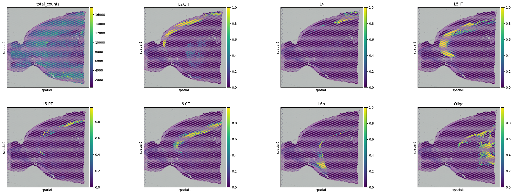
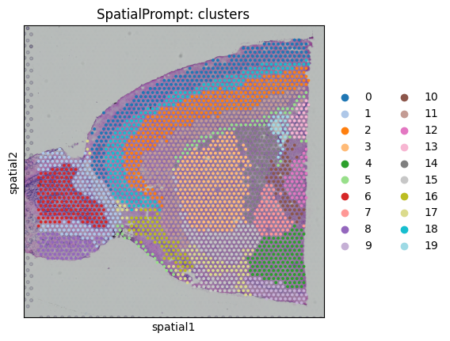

Tutorial.1.Mouse-cortex-Visium
In this tutorial, we will perform spatial deconvolution and spatial clustering using 10X Visium mouse cortex dataset. The cortex Visium dataset can be obtain on the 10X-database. scRNA-seq reference obtained from Allen Institute, generated with the SMART-Seq2 protocol (GSE71585).

Install Basic packages
!pip install scanpy
!pip install spatialprompt
Installing collected packages: grapheme, about-time, alive_progress, spatialprompt
Successfully installed about-time-4.2.1 alive_progress-3.1.4 grapheme-0.6.0 spatialprompt-0.0.4
Import major libraries
import pandas as pd
import scanpy as sc
import spatialprompt as sp
import numpy as np
import urllib
We will use mouse cortex Visium dataset and correspond single cell data
urllib.request.urlretrieve("https://drive.google.com/uc?id=1TjCV0uV8Qx0qbT-3mt_XhQ4BK51TH8Mn", filename="sc_m_cortex.gz")
urllib.request.urlretrieve("https://drive.google.com/uc?id=11Diy9cKbVvfChK5VuGtxZWi0taH_7gqZ", filename="st_m_cortex.gz")
('st_m_cortex.gz', <http.client.HTTPMessage at 0x7f1401d04580>)
!gunzip sc_m_cortex.gz
!gunzip st_m_cortex.gz
sc_data = sc.read_h5ad("sc_m_cortex")
st_data = sc.read_h5ad("st_m_cortex")
/usr/local/lib/python3.10/dist-packages/anndata/_core/anndata.py:121: ImplicitModificationWarning: Transforming to str index.
warnings.warn("Transforming to str index.", ImplicitModificationWarning)
Basic process and visualise the scanpy object
sc.pp.calculate_qc_metrics(st_data,inplace=True)
sc.pl.spatial(st_data,color="total_counts",
library_id='V1_Mouse_Brain_Sagittal_Anterior')

Extract all the data-required for SpatialPrompt \ Required inputs
- scRNA-seq reference matrix (sc_df) (numpy array will be preferred)
- sc_df gene names (sc_genes)
- sc_df cell-type annotations (sc_labels)
- Spatial reference matrix (st_df)
- st_df gene names (st_genes)
- spatial x and y coordinate (st_X, st_Y)
sc_df = sc_data.X
sc_genes = sc_data.var_names
sc_labels = sc_data.obs.loc[:,"label"]
st_df = st_data.X.toarray()
st_genes = st_data.var_names
st_X = st_data.obs.array_row
st_Y = st_data.obs.array_col
Perform spatial deconvolution
deconvolution_model = sp.SpatialDeconvolution()
cortex_predict = deconvolution_model.predict_cell_prop(sc_array = sc_df,
st_array = st_df,
sc_genes = sc_genes,
st_genes = st_genes,
sc_labels = sc_labels,
x_cord = st_X,
y_cord = st_Y)
Preprocessing Datasets : |████████████████████████████████████████| 6/6 [100%] in 0.3s (22.32/s)
1337 Common Genes Found 1000 HVGs Retained
Simulate Spatial Spots : |████████████████████████████████████████| 25584/25584 [100%] in 16.9s (1516.48/s)
25584 Spatial Spots Simulated
Capturing spatial microenvironment relation: |████████████████████████████████████████| 5/5 [100%] in 12.0s (0.42/s)
Spot Denvolution: |████████████████████████████████████████| 5/5 [100%] in 15.6s (0.32/s)
Total Time spent: 44.90159010887146 Sec
Visualising the results
#Insert the cell type proportions into the spatial object
for i in cortex_predict.columns:
st_data.obs.loc[:,i] = np.array(cortex_predict.loc[:,i])
st_data
AnnData object with n_obs × n_vars = 2597 × 1337
obs: 'in_tissue', 'array_row', 'array_col', 'library_id', 'n_genes_by_counts', 'log1p_n_genes_by_counts', 'total_counts', 'log1p_total_counts', 'pct_counts_in_top_50_genes', 'pct_counts_in_top_100_genes', 'pct_counts_in_top_200_genes', 'pct_counts_in_top_500_genes', 'Astro', 'CR', 'Endo', 'L2/3 IT', 'L4', 'L5 IT', 'L5 PT', 'L6 CT', 'L6 IT', 'L6b', 'Lamp5', 'Macrophage', 'Meis2', 'NP', 'No Class', 'Oligo', 'Peri', 'Pvalb', 'SMC', 'Serpinf1', 'Sncg', 'Sst', 'VLMC', 'Vip'
var: 'gene_ids', 'feature_types', 'genome', 'mt', 'hb', 'n_cells_by_counts', 'mean_counts', 'pct_dropout_by_counts', 'total_counts', 'log1p_mean_counts', 'log1p_total_counts'
uns: '_scvi_manager_uuid', '_scvi_uuid', 'clusters_colors', 'leiden', 'library_id_colors', 'neighbors', 'spatial', 'umap'
obsm: 'X_pca', 'X_umap', 'deconvolution', 'spatial'
layers: 'counts'
obsp: 'connectivities', 'distances'
sc.pl.spatial(st_data,
color=("total_counts","L2/3 IT", 'L4', 'L5 IT', 'L5 PT', 'L6 CT', 'L6b',"Oligo"),
library_id='V1_Mouse_Brain_Sagittal_Anterior')

Clustering the Visium data
clus_model = sp.SpatialCluster()
cortex_clus_annotations = clus_model.fit_predict(st_array = st_df,
x_cord = st_X,
y_cord = st_Y,n_cluster=20)
st_data.obs.loc[:,"SpatialPrompt: clusters"] = cortex_clus_annotations
Spatial clustering: |████████████████████████████████████████| 5/5 [100%] in 2.9s (1.74/s)
Executed in 2.88875675201416 second
sc.pl.spatial(st_data,color=("SpatialPrompt: clusters"),
library_id='V1_Mouse_Brain_Sagittal_Anterior',
palette="tab20")
